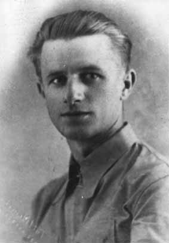
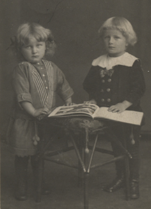

Kazimierz Tadeusz Matuszak (* 17 december 1912, † 2 juni 1993) föddes i Poznan i Polen. Som sexårig pojke blev han vittne till blodiga strider i Berlin mellan Spartakus anhängare och regeringstrupper, 1918. Efter studentexamen vid Komenskis gymnasium i Leszno, Polen, 1920, kom Kazimierz Matuszak till en militärskola för reservofficerare i Gnezno. Han fortsatte med studier vid skogsfakulteten i Poznanuniversitetet. Under andra världskriget 1939, undkom han fångenskap i närheten av Skierniewice (slaget vid Bzura) och deltog i försvaret av Warszawa (Citadellet och Zoliborz). Tillbaka till Poznan deltog han i en hemlig militär organisation. Kazimierz blev häktad av tyskarna i april 1940 och kom i kort fängsligt förvar. Därefter blev han intagen i koncentrationsläger, först i Dachau och senare i Sachsenhausen ända till krigsslutet. I juli 1945 kom Kazimierz Matuszak till Öreryd i Sverige som konvalescent. Där organiserade han någon form av samlingslokal och kantinen. Han hjälpte även till vid en skola, som polackerna bildade åt polska barn och ungdomar. Där gjorde han bekantskap med en viss fröken, magister Teresa Aniela Trojanowska, lärarinna vid skolan. Samma år som de vigdes började Kazimierz arbeta, först ett par månader i skogen (planteringsskola) och i pappersfabrik.
Sedan kom han till Stockholm och studerade två år vid Kungliga Skogshögskolan, för att få insyn i svensk skogsskötsel. 1949 till 1953 arbetade han med taxeringsarbete sommartid och som virkesmätare vintertid inom skogsnäringen över hela landet. Från norr (Arvidsjaur) till söder (Ängelholm). Senare blev han fotograf och laboratoriebiträde och till sist hade han en anställning som laboratorieingenjör vid Kungliga Tekniska Högskolan i Stockholm.
Han var mycket aktiv inom det polska flyktingrådet och flerårig ordförande i Polska Hjälpkommittén. Han dekorerades bl a med Komandors kors "Polonia Restituta", förtjänstkorset i guld för sin insats och kamp för Polens oberoende och förtjänstmedalj i guld för finansverksamheten hos polska regeringen i exil och fick dessutom medaljer för militära insatser under andra världskriget.
Kazimierz älskade naturen. Han var en aktiv fotograf, med blommor som huvudmotiv, och dokumenterade sina och sin frus många resmål i Skandinavien och över hela Europa, samt familjekrönikan även på film.
